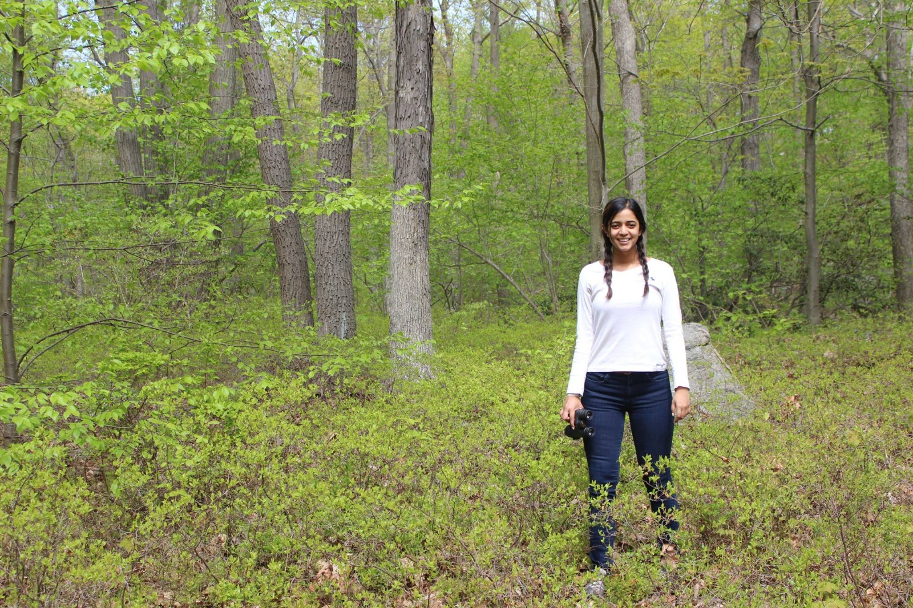
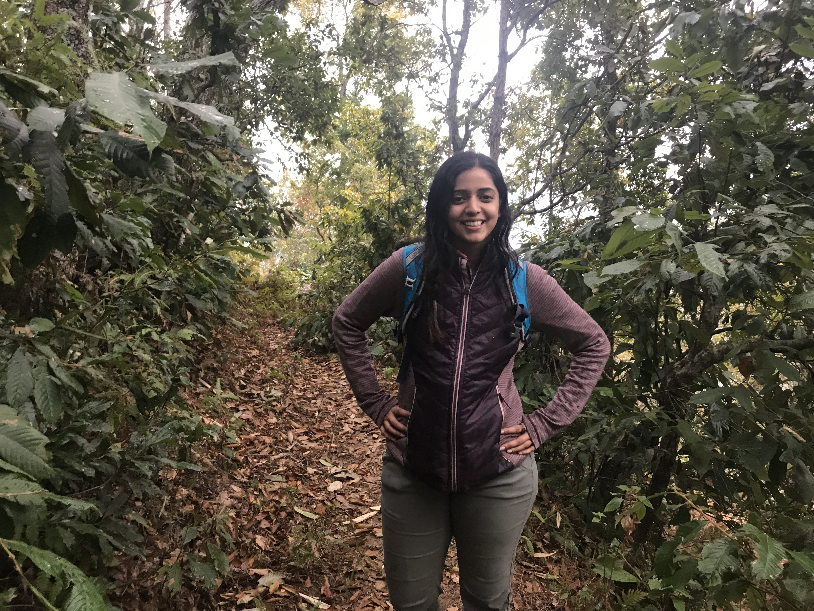

About me

I've lived most of my life in some of the world's largest and most populous cities, born in Mumbai, raised in Bangkok, high school in Dhaka, and now based in New York City. But even in the midst of city life, nature was ubiquitous - always catching my eye, often quietly occupying the edges. As a child, during the hour's drive from our apartment in the heart of bustling Bangkok to my father's workplace on the city's outskirts, I would stare out at a horizon lined with never-ending rice paddies and tall storks. Looking back, I realize those childhood memories planted a curiosity for the natural world and a passion for conservation that would eventually lead me to study wildlife and ecosystems across some truly extraordinary landscapes.
It was my first Ornithology course in college that crystallized it - a genuine passion for birds, wildlife, and conservation that would shape my academic path and everything that followed: an ecology major at Rutgers, life-changing field experiences across three continents, a PhD studying wildlife and ecosystem services across the forests and mountains of Nepal as a 2019 National Geographic Explorer, and a career dedicated to responsible, lasting conservation at the nexus of people and nature.
As my career has grown, I've come to realize that people are as central to conservation as the science itself; that connection is what continues to inspire me. I am driven by a deep commitment to responsible, lasting conservation at the nexus of people and nature, grounded in the conviction that centering the voices, rights, and priorities of Indigenous peoples and local communities is essential to getting there.
Research Interests
Broadly, my research interests include community ecology, macro ecological patterns, biodiversity monitoring, and understanding human-wildlife interactions in the context of ecosystem services and biodiversity conservation. Guided by my technical and practical skills in the field of ecology, and my personal passion for wildlife, I aim to contribute towards scientifically and socially informed policy-making, research, and assessments of biodiversity and ecosystem services.
